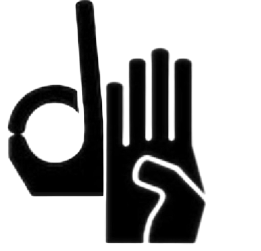

Dactylologie
Sourd·e → entendant
Épelez les lettres une à une devant la caméra
En pause
La caméra ne sert qu'à extraire des coordonnées de squelette, en local. Aucune image n'est enregistrée ni envoyée.

Dactylologie LSF · 100 % local
Épelez en LSF, l'application le lit à voix haute — tout reste sur votre appareil.
Le principe
Temps 1
Tenez la configuration de main face à la caméra, simplement, quelques dixièmes de seconde.
Temps 2
Un anneau se remplit pendant la confirmation. La lettre est validée une seule fois — jamais en boucle.
Temps 3
Lettre après lettre, le mot s'assemble à l'écran et peut être lu à voix haute.
En toute confidentialité
DoigtsBavards est un outil d'aide à la communication entre une personne sourde et une personne entendante — pas un remplacement d'interprète.
Conversation
Dactylologie
Épelez les lettres une à une devant la caméra
En pause
La caméra ne sert qu'à extraire des coordonnées de squelette, en local. Aucune image n'est enregistrée ni envoyée.
Reconnaissance
La lettre en cours, puis le mot composé
Lettre courante
Caméra coupée
Transcription
La parole devient du texte, en direct
Micro coupé
Activez le micro et parlez : le texte s'affichera ici.
L'audio du micro peut être traité par le service vocal du navigateur. La vidéo, elle, ne quitte jamais l'appareil.
Dictionnaire
Les 26 lettres. La plupart sont des configurations de main statiques ; les lettres signalées comportent un mouvement.
Collecte
Capturer des trames de landmarks par lettre et par signeur, pour entraîner le modèle (script Python). Aucun pixel conservé.
Visualisation
Placez votre main face à la caméra
En pause
La caméra ne sert qu'à extraire des coordonnées de squelette, en local. Aucune image n'est enregistrée ni envoyée.
Configuration
Identifiant et lettre à capturer
Statut de la capture
Enregistrement en coursEntrez un nom de signeur et lancez la caméra pour commencer.
Statistiques
Les chiffres de l'évaluation hors-ligne, et la confiance des lettres épelées pendant cette séance.
Évaluation
Sur un signeur jamais vu (leave-one-signer-out)
Lancez l'entraînement pour générer la matrice (modeles/confusion.json).
bonne reconnaissance (diagonale) · confusion
Cette séance
Confiance moyenne et nombre d'occurrences des lettres validées en Conversation
Aucune lettre épelée pour l'instant. Utilisez la Conversation : les lettres validées apparaîtront ici.